Cajas de resistencia y apoyo mutuo
Una idea que surge entre castaños y manifestaciones: llenar las cajas de resistencia de la huelga por la educación pública a golpe de castaña.
Cada centro hace su pedido directamente a productores del Valle del Jerte, y de cada kilo, una parte va a la caja de resistencia de vuestro cole o insti.

3 € de cada kilo son para quien las cultiva y el resto va a la caja de resistencia de vuestro centro. A 4 € el kilo, cada saco son 25 € para la caja.
Son las mismas castañas extremeñas que en el súper están a 7, 10 o hasta 13 €/kg… solo que cogidas y escogidas con un extra de la alegría que da el apoyo mutuo.
Para pedir, o si os apetece echar una mano en Madrid con la gestión, el transporte o el reparto.
¡Llenemos las cajas de resistencia a golpe de castaña!
«El trabajo y la lucha por un mundo deseable a menudo nos regala muy buenas compañías». Esperanza Realista, VV.AA.